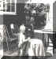

|
Alberdina Jacoba (Dien) Vermeij |
||
| Kind van: | Anthonie
Vermeij en Elisabeth de Pee |
|
| Geboren op: | 29/04/1937 | |
| te: | Dubbeldam | |
| Getrouwd met: | Teunis (Teun) de Jong | |
| op: | 14-07-1960 | |
| te: | ||
| Kinderen | ||
| Naam: | Geboortedatum, -plaats: | |
| Elisabeth (Lies) | 21/04/1963 |
|
| Willem (Wim) | 16/05/1965 | |
| Aaltje (Aleid) | 09/05/1968 - 18/10/1974 |
|
|
Foto's |
||
 |
||